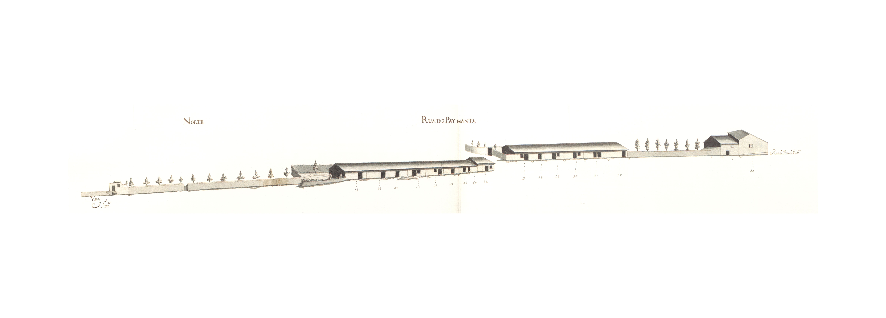

Rua do Paymanta
Rua de zona rural, que antes deveria ser chamada de cangosta, mesmo para os padrões do séc. XVIII.Ligando a rua da Ponte de Guimarães com o pontilhão das Lagesestava, em 1750, marginada por prédios de um e dois pisos do lado Sul e de apenas um piso no Norte.
Todas estas casas são extraordinariamente simples, estão implantadas em terreno não nivelado, com uma técnica construtiva rudimentar, como nos mostram as pequeníssimas aberturas das habitações de dois pisos.No termo da rua está a magnífica casa seiscentista das Lages, "deque he Emphiteuta Pedro da C.ª Sottomaior" que foi Alcaide Mor de Braga. É este sem dúvida o edifício civil que aparece
no Mappa e, o que mereceu mais cuidado no desenho.Era uma casa com pedra de armas sobre um portão que dava acesso a um páteo interior, vedado por uma cerca ameada. Tinha três corpos que terminavam na margem do rio Este.
Sobre o curso de água, tinha um anexo coberto, talvez um moinho. Infelizmente está hoje destruído todo este conjunto.Das 17 casas do lado Norte e 16 do Sul eram todas prazos do Cabido.Não tem hoje uma correspondência correcta pois andava entre as actuais ruas dePai Amante (que está em vias de completo desaparecimento) e Conselheiro Lobato.- Casa 1: Enfiteuta - N/A, Foro - N/A
- Casa 2: Enfiteuta - Pedro da Cunha Sottomayor, Alcaide Mor de Braga, Foro - N/A
- Casa 3 e 4: Enfiteuta - Pedro da Cunha Sottomayor, Alcaide Mor de Braga, Foro - N/A
- Casa 5: Enfiteuta - Pedro da Cunha Sottomayor, Alcaide Mor de Braga, Foro - N/A
- Casa 6: Enfiteuta - Pedro da Cunha Sottomayor, Alcaide Mor de Braga, Foro - N/A
- Casa 7: Enfiteuta - Pedro da Cunha Sottomayor, Alcaide Mor de Braga, Foro - N/A
- Casa 8: Enfiteuta - Pedro da Cunha Sottomayor, Alcaide Mor de Braga, Foro - N/A
- Casa 9: Enfiteuta - Pedro da Cunha Sottomayor, Alcaide Mor de Braga, Foro - N/A
- Casa 10: Enfiteuta - Pedro da Cunha Sottomayor, Alcaide Mor de Braga, Foro - N/A
- Casa 11: Enfiteuta - Pedro da Cunha Sottomayor, Alcaide Mor de Braga, Foro - N/A
- Casa 12: Enfiteuta - Pedro da Cunha Sottomayor, Alcaide Mor de Braga, Foro - N/A
- Casa 13: Enfiteuta - Pedro da Cunha Sottomayor, Alcaide Mor de Braga, Foro - N/A
- Casa 14: Enfiteuta - Pedro da Cunha Sottomayor, Alcaide Mor de Braga, Foro - N/A
- Casa 15: Enfiteuta - Pedro da Cunha Sottomayor, Alcaide Mor de Braga, Foro - N/A
- Casa 16: Enfiteuta - Pedro da Cunha Sottomayor, Alcaide Mor de Braga, Foro - N/A
- Casa 17: Enfiteuta - Pedro da Cunha Sottomayor, Alcaide Mor de Braga, Foro - 960 reis, 10 alqueires de trigo, 25 de pão meado e 4 galinhas
- Casa 18: Enfiteuta - Pedro da Cunha Sottomayor, Alcaide Mor de Braga, Foro - N/A
- Casa 19: Enfiteuta - Pedro da Cunha Sottomayor, Alcaide Mor de Braga, Foro - N/A
- Casa 20: Enfiteuta - Pedro da Cunha Sottomayor, Alcaide Mor de Braga, Foro - N/A
- Casa 21: Enfiteuta - Pedro da Cunha Sottomayor, Alcaide Mor de Braga, Foro - N/A
- Casa 22: Enfiteuta - Pedro da Cunha Sottomayor, Alcaide Mor de Braga, Foro - N/A
- Casa 23 e 24: Enfiteuta - Pedro da Cunha Sottomayor, Alcaide Mor de Braga, Foro - N/A
- Casa 25 e 26: Enfiteuta - Pedro da Cunha Sottomayor, Alcaide Mor de Braga, Foro - N/A
- Casa 27: Enfiteuta - Pedro da Cunha Sottomayor, Alcaide Mor de Braga, Foro - N/A
- Casa 28, 29 e 30: Enfiteuta - Pedro da Cunha Sottomayor, Alcaide Mor de Braga, Foro - N/A
- Casa 31: Enfiteuta - Pedro da Cunha Sottomayor, Alcaide Mor de Braga, Foro - N/A
- Casa 32: Enfiteuta - Pedro da Cunha Sottomayor, Alcaide Mor de Braga, Foro - N/A
- Casa 33: Enfiteuta - Pedro da Cunha Sottomayor, Alcaide Mor de Braga, Foro - N/A

Rua do Paymanta - Sul.
Rua do Paymanta - Norte.